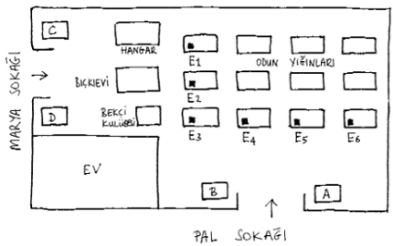

Ertesi gün öğleden sonra saat iki buçukta, Pal Sokağı Çocukları, Arsanın küçük kapısından içeri girdiklerinde, Arsadaki tahta perdenin iç tarafına, dört tane çiviyle asılmış kocaman bir yazı gördüler. Bu yazı Boka tarafından kaleme alınmış bir bildiriydi. Boka, yazıyı hazırlamak için büyük bir özveriyle gece geç saatlere kadar uyumadan çalışmıştı. Yazıdaki harfler siyah çini mürekkebiyle yazılmış; yalnızca satır başlarındaki büyük harfler için kırmızı mürekkep kullanılmıştı.
Bildiri metni şöyleydi:
BİLDİRİ
HERKES HAZIRLIKLI OLSUN!
ÜLKEMİZ BÜYÜK BİR TEHLİKEYLE KARŞI KARŞIYA VE BU TEHLİKEYİ
ANCAK VE ANCAK BİZİM CESARETİMİZ ORTADAN KALDIRABİLİR.
ARSAMIZ ELİMİZDEN ALINMAK İSTENİYOR.
KIRMIZI GÖMLEKLER ARSAMIZA SALDIRMAYI KARARLAŞTIRDILAR.
AMA BİZ ONLARA KARŞI HAYATIMIZ PAHASINA ÜLKEMİZİ SAVUNACAĞIZ.
HERKES GÖREVİNİN BAŞINA!
İMZA: BAŞKAN
Bildiriyi okuduktan sonra, hiç kimsenin içinde tenis oynama isteği kalmamıştı. Çocuklar, Arsanın üzerinde bir aşağı bir yukarı gidip geliyorlardı. Tahta perdeye dönüp coşkulu bildiri metnini onuncu, yirminci kez okuyor ve pek yakında patlak verecek olan savaş üzerine konuşuyorlardı. İçlerinden bazıları yazıyı ezberlemişti. Bir odun yığının üzerine çıkıp onu yüksek sesle söyleyenler bile vardı. Dinleyiciler –ki onlar da metni ezberlemiş sayılırdı– odunların tepesindeki bu konuşmacıları dinledikten sonra, bildiriyi bir kez daha okumak için tahta perdeye geri dönüyor ve ardından, buldukları başka bir odun yığınına tırmanıp kendi sıraları gelince, bildiriyi akıllarında tuttukları kadarıyla tekrarlıyorlardı.
Birliğin geçmişinde buna benzer bir olay yaşanmış olmadığından, bu bildiri çocuklar için büyük bir yenilik anlamı da taşıyordu. Boka böyle bir yazı hazırlayıp metnin altına imzasını atma gereği duyduğuna göre, tehlike gerçekten de çok ciddi boyutlarda demekti!
Bunlar bir yana, çocuklar, son günlerdeki tatsız gelişmelerle ilgili pek çok ayrıntıyı da öğrenmiş durumdaydılar. Kimileri, Gereb’i hedef alan imalı sözler söylemekteydi. Ama şimdilik hiç kimse, ansızın ortaya çıkan bu savaş tehlikesiyle Gereb’in nasıl bir bağlantısı olduğunu tam olarak kestiremiyordu. Başkan, bu konuda arkadaşlarına bilgi vermemeyi uygun bulmuştu ve bu kararı vermekte haklı nedenleri vardı: Gereb’i Arsa üzerinde suçüstü yakalamayı ve savaş kuruluna çıkarmayı tasarlıyordu. Bu amacına ulaşana dek, Gereb’in ihanetini gizli tutmak yerinde olacaktı. Tabii bunları tasarlarken, küçük Nemeçek’in, tamamen kendi arzusuyla Botanik Bahçesi’ne girip düşman ordunun ortasında, hiç kimsenin beklemediği bir gerilim yaratmaya yelteneceğini aklından bile geçirmemişti! Olup bitenlerden, bu sabah okul çıkışında Nemeçek’in onu, odacının öğrencilere tereyağlı reçelli ekmek sattığı köşeye çekmesi ve orada kendisine her şeyi bir bir anlatmasıyla haberi olabilmişti ancak!
Saat iki buçukta, çocukların Arsada toplandıklarını söylemiştim değil mi? Arsada tam bir karmaşanın yaşandığını ve herkesin büyük bir sabırsızlıkla Başkanı beklediğini de söylemiş miydim peki? Macun Derneğini tam kalbinden yaralayan, derneğe özel bazı olumsuz gelişmeler, savaş endişesiyle yaşanan heyecana eklenince, ortam daha da karışmıştı. Derneğin ortak macunu kurumuştu, çatırdıyordu. Artık ne kadar çiğnenirse çiğnensin işe yaramazdı; hiçbir biçim verilemezdi çünkü ona. Bunun sorumlusu da tartışmasız olarak başkan Kolnay’dı. O, macunu çiğneme görevini savsaklayarak sorumsuz davrandığı için suçluydu. Bu sorumsuzluğu nedeniyle Kolnay’ı en çok eleştiren, yerden yere vuran kim oldu dersiniz? Tabii ki Barabas! Bir üyeden diğerine koşturuyor ve Kolnay’ın bu davranışını kınayıp, kendisine yandaş toplamaya çalışıyordu. Çabaları boşa gitmedi; beş dakika içinde olağanüstü kurul toplantısı yapılmasını sağlayacak sayıda imzayı toplamayı başarmıştı. Zaten Kolnay da toplantı konusunun ne olacağını, başına neyin geleceğini iyi biliyordu!
“Peki, toplantı yapalım,” dedi imzaları görünce. “Ancak, Arsayla ilgili çalışmalar her şeyden önce gelir. Olağanüstü toplantıyı yapmak üzere sizi yarın çağıracağım!”
Barabas, başkan Kolnay’ın bu kararına şiddetle karşı çıktı:
“Bunu kabul etmiyoruz. Başkan düpedüz korkuyor!” diye bağırdı.
Kolnay da ona çıkıştı:
“Senden mi korkacağım?”
“Benden değil, ama kurul’dan korkuyorsun. Olağanüstü toplantı çağrısının hemen yapılmasını istiyoruz biz!”
Kolnay tam ona yanıt vermeye hazırlanırken, kapının olduğu köşeden, Birliğin toplanma sesleri yükseldi:
“Hahooo! Hohohoo!”
Herkes başını kapıya çevirmişti. Boka’nın eşikten geçtiğini gördüler. Hemen ardında kocaman kırmızı bir yün atkıyı boynuna sımsıkı dolamış Nemeçek vardı. Birliğin büyük başkanının Arsaya gelmesi, dernek içi tartışmalara son noktayı koymuştu. Kolnay, bu durumda boyun eğmek zorunda kalmıştı.
“Pekâlâ, tamam! Kurul bugün toplanacak. Ama öncelikle, Boka’nın bize söyleyeceklerini dinleyelim.” dedi.
“Tamam,” dedi Barabas. Ama çevrede onun fikrini söylemesini bekleyen kimse yoktu! Macun Derneği üyeleri, diğer çocuklarla birlikte, başkan Boka’nın çevresini sarmış ve onu soru bombardımanına tutmaya başlamışlardı bile! Kolnay ve Barabas da onlara katıldılar. Ne tuhaf ki o sırada birbirleriyle didişmiyorlardı!
Boka, bir hareketiyle sessizliği sağladı ve tüm dikkatler üzerindeyken konuşmaya başladı:
“Karşı karşıya olduğumuz tehlikeden hepinizin haberi var, bildiriyi hepiniz okudunuz. Casuslarımız düşman ordunun içine sızdılar ve öğrendiler ki Kırmızı Gömlekler bize yarın saldırmayı kararlaştırmışlar.”
Bu haberi duyunca, kurulda bir uğultu yükseldi. Hiç kimse savaşın bu kadar yakın bir zamanda olacağını tahmin etmiyordu.
“Evet, saldırı yarın olacak!” diye tekrarladı Boka. “Ve bugünden itibaren, Arsada sıkıyönetim ilan ediyorum. Herkes, üstünün emirlerini koşulsuz yerine getirecek. Hepiniz benim dediklerimi yapacaksınız. İşimiz hiç kolay olmayacak; Kırmızı Gömlekler çok güçlüler, çok cesurlar ve sayıları bizden epey fazla! Kötü bir savaş bekliyor bizi... Bu yüzden, hiç kimseyi zorla savaşa sürüklemek istemiyorum. Orduda yer almak istemeyen biri varsa, bunu şimdiden söylesin!”
Derin bir sessizlik oldu. Hiç kimse yerinden kıpırdamıyordu. Boka, duyurusunu yineledi:
“Savaşta görev almak istemeyen biri varsa, bunu hemen söylesin. Sustuğunuza göre, kimse yok, öyle mi?”
Çocuklar hep bir ağızdan:
“Yok!” diye yanıt verdiler.
“O halde, bana söz verin; hepiniz yarın saat ikide burada olacaksınız.”
Çocuklar, sıraları geldiğinde, büyük bir ciddiyetle Boka’nın elini sıktılar. Yeminlerini daha da sağlamlaştırmak için yapıyorlardı bunu. Hepsiyle tokalaştıktan sonra Boka sesini yükselterek:
“Yarın Arsaya gelmeyen yalan yere and içmiş olacak ve hain sayılacak! Bir daha asla Arsaya ayak basamayacak; gelirse onu sopalarla kovalayacağız,” dedi.
Lezik:
“Başkanım,” diye seslenerek Boka’nın sözünü kesti. Düzene aykırıydı bu davranışı, ama söyleyeceği de önemliydi:
“Biz hepimiz buradayız, yalnız Gereb yok aramızda!”
Yeniden derin bir sessizlik oldu. Herkes Gereb konusunda bir açıklama bekliyordu sabırsızlıkla. Ama Başkan, hainin gerçek kimliğini zamanı gelince açıklamakta kararlıydı. Bu yüzden Gereb’le ilgili hiçbir açıklama yapmaya niyeti yoktu.
Herkes “Gereb niye yok? Ne oldu ona?” diye soruyordu.
“Hiçbir şey,” diye yanıtladı Boka sakin bir sesle. “Bu konuyu daha sonra konuşacağız. Şimdilik, savaştan başka hiçbir şey düşünemeyiz. Emirlerimi vermeden önce, size söylemek istediğim çok önemli bir şey var. Böyle ciddi bir tehlikeyle karşı karşıyayken, Birliğimizin içinde olan bütün kavgalar son bulmak zorunda! İçinizde dargın olan varsa hemen şimdi barışsın!”
Kimseden çıt çıkmıyordu.
“Bekliyorum,” dedi Başkan. Aranızda dargın olan kimse var mı?”
Vays çekine çekine konuşmaya başladı:
“Benim bildiğim...”
Boka, “Neymiş bildiğin? Söyle haydi!” diye üstüne gitti arkadaşının.
“Kolnay... Ve Barabas...”
Boka Barabas’a baktı:
“Doğru mu bu?”
Barabas kıpkırmızı olmuştu:
“Çünkü Kolnay...”
Kolnay, Barabas’ın sözünü kesti:
“Çünkü Barabas...”
Boka, “Kesin şunu!” diye bağırdı ikisine de. “Hemen şimdi barışın, yoksa ikinizi de kapı dışarı edeceğim. Birlik beraberlik içinde olmazsak savaşı nasıl kazanacağız biz?”
Birbirine düşman olan iki çocuk, Boka’ya yaklaştılar ve gönülsüzce birbirlerinin elini sıktılar. Daha birbirlerinden yeni ayrılmışlardı ki Barabas hemen seslendi:
“Başkanım!”
“Ne var?”
“Benim bir şartım var...”
“Ne şartı?”
“Şey... Kırmızı Gömlekler bize saldırmaktan vazgeçerlerse, Kolnay’la yeniden darılmama izin verilsin!..”
Boka, Kolnay’a, onu bu sözü söylediğine bin pişman edecek bir ifadeyle baktı ve sonra “Kapa çeneni!” diye bağırdı.
Barabas anında sus pus oldu. Ama içindeki öfke öyle bir gürlüyordu ki, Kolnay’a bir dirsek geçirmek için neler vermezdi o sırada!
“Şimdi,” diye söze tekrar başladı Boka. “Er Nemeçek, bize savaş planını anlat!”
Nemeçek, cebinden bir kâğıt parçası çıkarıverdi. Bu kâğıtta, Boka’nın, aynı gün öğle yemeğinden sonra çizmiş olduğu savaş planı bulunuyordu. Boka’nın planı şu şekildeydi:

Nemeçek, bir taşın üzerine kâğıdı açtı ve herkes bu taşın etrafına dizildi. Çocukların hepsi de, kendisine Arsanın hangi köşesinde hangi görevin verildiğini öğrenmek için sabırsızlanıyordu.
Boka anlatmaya başladı:
“Kâğıda bakın ve söyleyeceklerimi iyi dinleyin! Bu, bizim ülkemizin, yani Arsamızın haritası. Casuslarımızın bildirdiklerine göre, düşman bize iki ayrı köşeden saldıracak; Pal Sokağı’ndan ve de Marya Sokağı’ndan. Sırayla gidelim: A ve B olarak işaretlediğim iki dikdörtgen, Pal Sokağı’nın kapısındaki iki savunma bölüğünün yerini gösteriyor. A bölüğü Vays’ın yönetimindeki üç askerden oluşturulacak. B bölüğünün komutanı Lezik olacak ve bu bölükte de üç asker bulunacak. İşte şurada gördüğünüz Marya Sokağı da iki ayrı bölük tarafından savunulacak; bunlar C ve D bölükleri. Bu iki bölükten biri Rihter’in, diğeri de Kolnay’ın komutanlığında olacak.”
Çocuklardan biri “Ben neden komutan olmuyorum?” diyerek Boka’nın sözünü kesti.
“Kimdi o konuşan?” diye sordu Boka; belli ki çok kızmıştı.
Barabas öne çıktı.
“Yine mi sensin? Bir tek söz daha söyleyecek olursan, kendini savaş divanında bulacaksın! Hemen yerine otur,” dedi Başkan.
Barabas, ağzında bir şeyler geveleyip yerine oturdu. Boka devam etti:
“Dikdörtgen içine çizdiğim, F harfi ve bir de numarayla gösterilen bölgeler, bizim burçlarımız. Kum bombalarıyla dolduracağımız bu burçların her birinde ikişer asker bulunması yeterli. Kum toplarıyla savaşmak kolaydır nasıl olsa! Zaten, burçlar birbirine öyle yakın ki, içlerinden birine saldırılacak olursa, diğer burçtakiler rahatlıkla oraya yardıma gidebilir ve düşmanı püskürtebilirler. 1, 2 ve 3 numaralı burçlar, Arsayı Marya Sokağı cephesinden koruyacaklar. Ve 4, 5, 6 numaralı burçlar da A ve B bölüklerinin hareketini destekleyecekler. Burçlara kimlerin yerleştirileceğini de birazdan söyleyeceğim. Bölük komutanları, bölüklerine alacakları iki askeri kendileri seçebilirler. Anlaşıldı mı?”
Çocuklar hep birlikte “Evet, evet!” diye yanıtladılar.
Büyük bir hayranlıkla ve gözlerini dört açmış biçimde Boka’yı dinliyor, çevresinde toplandıkları savaş planından gözlerini ayırmıyorlardı. İçlerinden bazıları defterlerini çıkarmış, Boka’nın önemli buldukları sözlerini not ediyorlardı.
“Birliklerimizin Arsadaki düzeni işte böyle olacak!” dedi Boka. Şimdi gelelim savaş taktiğimize. Çok dikkat edin. Tahta perdenin üzerine çıkacak gözcüler, Kırmızı Gömleklerin Arsaya geldiklerini duyurur duyurmaz, A ve B bölükleri kapıyı açacaklar.
“Nasıl? Kapıyı mı açacaklar?”
“Evet, kesinlikle! Kendimizi duvarların, burçların arkasına saklamayacağız. Biz açık bir savaş yapmaya hazırız ve bunu onlara da göstereceğiz! Kırmızı Gömlekler, varsın girsinler içeri! Nasılsa onları dışarı atıveririz! Dediğim gibi, A ve B bölükleri kapıyı açacak ve düşmanın içeri girmesini bekleyecekler. Düşman Arsaya girer girmez saldırıya geçecekler. Onlarla aynı anda, 4, 5 ve 6 numaralı burçlardakiler düşmanı bombalamaya başlayacaklar. Pal Sokağı cephesindeki birliğin yapacağı bu kadar! Yapabilirseniz düşmanı Arsanın dışına atın; bunu başaramazsanız, düşmanın 3, 4, 5 ve 6 numaralı burçlarca oluşturulmuş çizgiyi yarıp geçmesini engellemeye çalışın.
Marya Sokağı cephesindeki diğer birliğin işi ise çok daha fazla titizlik gerektiriyor! Rihter, Kolnay, beni çok iyi dinleyin! C ve D bölükleri, Marya Sokağı’na bir gözcü yerleştirecekler. Düşman kapının önünde görünür görünmez, burçtakiler savaş düzenine geçecekler. Yani, Kırmızı Gömleklerin Arsaya gelişiyle birlikte, iki burçta bulunan askerler, kaçıyormuş gibi birden geri çekilecekler. Haritaya bakın... Görüyor musunuz? Rihter, senin komuta edeceğin bölük olan C bölüğü, işte şu hangara sığınacak.
Anlatırken bir yandan da harita üzerinde hangarın yerini gösteriyordu.
“İşte buraya, anladın mı Rihter?”
“Evet, anladım.”
“Kolnay’ın yöneteceği D bölüğü Yano’nun kulübesini tutacak. Şimdi beni çok iyi dinleyin. Kırmızı Gömlekler bıçkıevinin çevresinde dolaşıp, arkasına vardıklarında, 1, 2 ve 3 numaralı burçların tam önüne gelmiş olacaklar. Bu üç burçta görevli askerler hemen onları bombalamaya başlayacaklar! Aynı anda iki savaş bölüğünden biri hangara, diğeri de Slovak bekçinin kulübesine yaklaşacak ve düşmana arkadan saldıracaklar. Eğer sıkı dövüşürseniz, düşman iki ateş arasında kalır ve teslim olmaktan başka bir şey yapamaz! Teslim olmazlarsa, onları bekçinin kulübesine doğru sürün ve kapıyı üzerlerine kilitleyin. Bunu yaptıktan sonra, C bölüğü Slovak’ın kulübesinin önünden, D bölüğü de siperleri dolaşarak 6 numaralı burcun yanından ilerleyecek ve A ve B bölüklerinin yardımına koşacaklar. Aynı anda, 1 ve 2 numaralı burçlardaki askerler 4 ve 5 numaralı burçlara gidecek ve saldırıyı yoğunlaştıracaklar. A, B, C ve D bölükleri tek bir çizgi halinde toplanarak düşmana saldırıya geçecekler. Düşman, bir yandan da, bütün burçlardaki askerler tarafından bombalanıyor olacak. Bu yoğun saldırıya dayanacak güçleri kalmayacak ve Kırmızı Gömlekler, Pal Sokağı’nın kapısından dışarı atılacaklar. Savaşı zaferle noktalayacağız. Anladınız mı?”
Başkan’ın bu sözleri büyük bir heyecanla karşılandı. Çocuklar, sevinçten kendilerinden geçmiş, mendillerini sallıyor ve şapkalarını havaya savuruyorlardı. Nemeçek, dev gibi kırmızı atkısını boynundan çıkarıp havaya kaldırmıştı ve nezleli sesiyle bağırıyordu:
“Yaşasın Başkan!”
Onun çığlığına dört bir yandan “Yaşasın!” sesleri katıldı.
Boka, bu tezahüratı yine hemencecik kesti.
“Bir şey daha var! Genel karargâhımız C ve D bölüklerinin yanında olacak. Size komutlarımı emir subayım aracılığıyla bildireceğim ve daha önce de söylediğim gibi, bütün komutlarım hiç itiraz edilmeden yerine getirilecek!”
“Peki, emir subayın kim olacak?” diye sordu biri.
Başkan “Nemeçek,” diye yanıt verdi.
Bunu duyunca, çocuklar şaşkın şaşkın birbirlerine baktılar. Macun Derneği üyeleri, Boka’nın bu kararına karşı çıkmak için cesaretlerini toplamaya çalıştılar. Aralarında fısıldaşıyorlardı:
“Haydi söyle!”
“Konuşsana!”
“Neden ben söyleyecekmişim? Kolaysa kendin söyle!”
Boka onlara baktı, şaşkın bir ifadeyle:
“Bundan rahatsız mı oldunuz?” dedi.
Bir tek Lezik’in, itirazını dile getirmeye cesareti vardı:
“Evet, hem de çok.”
“Nedenmiş o?”
“Geçen gün... Macun Derneğinin olağanüstü toplantısı sırasında... O sırada...”
Boka’nın sabrı taşmıştı:
“Yeter,” diye bağırdı. “Kapa çeneni! Sizin saçmalıklarınız beni hiç ilgilendirmiyor. Nemeçek benim yardımcım olacak, o kadar! Buna karşı çıkan biri olursa kendisini savaş divanında bulur, şimdiden söyleyeyim.”
Bu son açıklama biraz sertti, ama herkes bir kez daha anlamış oldu ki savaş durumunda, başarılı olmanın tek yolu düzenin sağlanmasıdır! Boka da bunu yapmaya çalışıyordu. Nemeçek’in emir subayı olmasına herkes boyun eğmek zorunda kaldı. Asıl üzerinde durdukları konu ise, Nemeçek’in bu konuma getirilişinin, Macun Derneğine bir hakaret niteliği taşıyor olmasıydı. Dernek üyelerinin, ortak kararla hain ilan ettikleri ve bu nedenle adını karar defterine küçük harflerle yazdıkları bir üyenin şimdi böyle önemli bir göreve getirildiğini görmek, kendilerini aşağılanmış hissetmelerine neden olmuştu. Ah bir de gerçeği bilselerdi...
Boka cebinden burçlarda yer alacakların adlarını tek tek yazdığı bir kâğıt çıkardı. Bölüklere kimlerin komuta edeceğini söyledi, komutanlar da emir altına alacakları askerleri seçtiler. Tüm bunlar kusursuz bir düzen içinde, ciddiyetle yapılmaktaydı. Çocuklar öylesine heyecanlıydılar ki konuşmakta güçlük çekiyorlardı. Sonra Boka ilk emri verdi:
“Herkes görev yerine! Şimdi bir deneme yapacağız.”
Çocuklar sağa sola dağıldılar. Herkes yerini aldı.
“Benden gelecek komutu bekleyin!” diye bağırdı Boka.
Arsanın ortasında yalnızca o kalmıştı, yanında da emir eri Nemeçek vardı. Zavallı Nemeçek yeni bir öksürük nöbetine yakalanmıştı ve öksürüğü kolay kolay geçecek gibi değildi. Boka ona tatlı bir sesle:
“Ernest,” diye seslendi. “Atkını sar boynuna, iyice nezle olmuşsun sen.”
Nemeçek arkadaşına sevgi dolu bir ifadeyle baktı ve hemen dediğini yaptı. Atkıyı boynuna öyle özenerek dolamıştı ki, ancak kulaklarının ucu görünüyordu.
Boka, ona “Şimdi iki numaralı burçtakilere emrimi iletmen için seni görevlendiriyorum. Beni çok dikkatli dinle,” dedi.
O sırada Nemeçek, daha önce hiç yapmadığı bir davranışta bulunarak komutanının sözünü kesti:
“Özür dilerim,” dedi, “ama önce sana söyleyeceğim bir şey var!”
Boka kaşlarını çatarak “Nedir?” diye sordu.
“Biraz önce Macun Derneği üyeleri...”
“Tamam, gerisini boşver!” dedi Boka sabırsızca. “Yoksa bu budalalıkları ciddiye mi alıyorsun?”
“Evet,” dedi Nemeçek. “Çünkü onlar da ciddiye alıyorlar. Hepsinin budala olduğunu biliyorum ve hakkımda ne düşündüklerini umursamıyorum. Ama senin... Beni... Aşağılamanı istemem!..”
“Bu da nereden çıktı? Seni niçin aşağılayacakmışım?”
Ufaklık atkısının altında kaybolmuş ağzından titrek bir ses çıkarıp yanıtladı:
“Onlar beni... Beni... Hain ilan ettiler.”
“Hain mi? Seni mi?”
“Evet!”
“Vay canına! Bu konu ilgimi çekmeye başladı. Anlat bakalım.”
Nemeçek, önceki gün başına gelen olayları boğuk bir sesle, kesik kesik anlatmaya koyuldu: Macun Derneği üyelerinin, dernek çalışmalarını gizli yürütme kararı almak üzere toplantı yaptıklarını, onun tam da bu toplantı sırasında Gereb’i gördüğü için aceleyle toplantıyı terk etmesi gerektiğini; arkadaşlarının ise onun bu zorunlu gidişini, gizli bir derneğe katılmaya cesareti olmadığı için kaçmaya yeltenmek olarak yorumladıklarını ve bu nedenle de kendisini korkak ve hain ilan ettiklerini anlattı. Bütün bu olanların sebebi açıkça şuydu: subay beyefendiler, Başkan Boka’yla Nemeçek’in arasındaki dostluk bağına hiç mi hiç iyi gözle bakmıyorlardı. Nemeçek’i kıskanıp ona kin güttükleri ortadaydı ve sırf ondan intikam almak için adını kara deftere, baştan sona küçük harflerle yazmışlardı.
Boka sabırla tüm hikâyeyi dinledi. Arkadaşlarının arasında böylesine kıt akıllıların bulunduğunu duymak canını sıkmıştı. Boka zeki bir çocuktu, ama henüz bilmiyordu ki insanlar birbirlerine benzemezler ve gerçek, her zaman acı deneyimlerden geçilerek öğrenilir. Bunu yakın zamanda daha net görecekti. Şimdi küçük sarışına sevgi dolu gözlerle bakıyordu.
“Pekâlâ Nemeçek,” dedi, “sen görevini yapmaya devam et ve dernek üyelerinden de sakın korkma. Savaş sona ermeden kötü bir şey söylemek istemiyorum. Ama her şey bittikten sonra onlar, kendileri için ne düşündüğümü öğrenecekler. Şimdi hemen 1. ve 2. burçlara fırla ve oradakilere 4. ve 5. burçlara geçmelerini söylediğimi ilet. Bunun ne kadar sürede gerçekleştirileceğini görmek istiyorum.
Er, hemen esas duruşa geçti; asker selamını verdi. Şu savaş ne kötü şeydi! Ufaklığın kırılan onurunun yeniden yerine getirilmesi için yapılması gerekenlerin ertelenmesine yol açıyordu. Ama Nemeçek kederini içine gömmeyi bildi ve bir askere yakışır biçimde:
“Başüstüne Komutanım!” diye yanıt verdi başkanına.
Ardından, yıldırım hızıyla burçlara doğru koşmaya başladı. Geçtiği yerde tozu dumana katıyordu. Böyle hızlı koştuğu için bir anda tepedeki odun yığınlarının ardında gözden kayboluverdi. Burada, karman çorman saçları ve fal taşı gibi açılmış gözleriyle beklemekte olan çocuklarla karşılaştı. Hepsinin de yüzlerinde, gerçek bir savaşın başlamasına dakikalar kala gerçek askerlerin yüreklerini kaplayan heyecanın izleri okunuyordu. Sözüne güvenilir savaş gazetecilerinin, savaşa katılan askerler üzerine anlattıkları her şey, şu anda orada bulunan çocuklar için de tamamen geçerliydi. Belki de fazlası vardı!
Boka, Arsanın ortasında yalnız kalmıştı. Sokaktan geçen arabaların gürültüleri geliyordu kulağına, ama sanki o bunları duymuyordu. Bambaşka düşünceler, duygular içindeydi. Hiç bilmediği yabancı bir ülkede, geniş bir alanın üzerinde olduğunu hayal ediyordu. Hayalinde canlandırdığı, üzerinde yapılacak savaşta iki ulusun yazgısının belirleneceği geniş mi geniş bir alandı. Çocuklar görev bölgelerinde sessiz sakin durmakta, onun emirlerini beklemekteydiler. Her şey ona bağlıydı... Bu küçük topluluğun mutluluğu, geleceği, onun ellerindeydi... Güzel öğleden sonralarını, tenis maçlarını, top oyunlarını ve arkadaşlarıyla birlikte burada oynadıkları diğer bütün oyunları geçirdi kafasından... Ve bu kadar yüce bir görevi üstlendiği için kendisiyle gurur duydu!
“Evet,” dedi kendi kendine, “hepinizi savunacağım!”
Bakışıyla sevgili Arsasını adeta kucakladı. Odun yığınlarına, odunların arasındaki bıçkıevinin beyaz buharını her zamanki gibi dışarı püskürten sevimli bacasına baktı... İçinde bulundukları gün, diğer günlerden hiçbir farkı olmayan, kaygılardan uzak ve geleceğin tehlikede olmadığı bir gün gibiydi. Tabii sadece görünüşte böyleydi!
Boka, o anda kendisini, ciddi sonuçlar doğuracak bir savaşa girmek üzere olan bir ordunun komutanı gibi hissediyordu. Napolyon’u düşündü. Sonra da kendi geleceğini... İleride o ne olacaktı? Gerçek bir asker mi? Üzerinde üniforması, dünyanın herhangi bir yerindeki gerçek bir savaş alanında; şimdiki gibi sadece bir oyun alanını değil, adına “yurt” denilen ve ona sevgiyle bağlı olunan toprak parçasını savunmak üzere görevlendirilmiş, gerçek bir asker mi olacaktı? Yoksa, birbirinden acımasız hastalıklara karşı mücadele eden; kendini bu hastalıklara çare bulmaya adamış kararlı bir doktor mu?
Boka, bu düşüncelere dalmış, kafasında gelecekteki Boka’yı canlandırırken, Arsaya çoktan alacakaranlık çökmüştü. İçini çekti ve ordusunu denetlemek üzere, odun yığınlarına doğru yürümeye başladı.
Çocuklar onu, görev yerlerinin tepesinden gördüler ve bunun üzerine siperlerde büyük bir hareketlilik başladı. Güzelce yerleştirilmiş bomba dizilerinin önünde askerler, başkanlarını selamlamak üzere esas duruşa geçmişlerdi! Ama Başkan, yarı yolda aniden durakladı ve arkasına göz attı. Kulak kabartıyordu. Ardından geri dönüp hızlı adımlarla tahta perdenin küçük kapısına gitti. Kapıya vuruluyordu. Boka, sürgüsünü çekerek kapıyı açtı ve karşısına çıkanı görünce, şaşkınlıkla bir adım geriledi. Gözlerine inanamamıştı. Bu Gereb’di.
Gereb, “Burada mıydın?” diye bir şeyler geveledi ağzında.
Boka ona yanıt verememişti; ne diyeceğini şaşırmış bir durumdaydı. Gereb, sakince içeri girdi ve arkasından kapıyı kapadı. Boka, Gereb’in buraya hangi amaçla gelmiş olabileceğini kestiremiyordu. Ama, karşısındaki “hain” çocuğun her zamanki gibi rahat ve neşeli olmadığı da ortadaydı. Gereb, solgun ve kederli biçimde, yakasını çekiştirip duruyordu. Bir şey söylemek istiyor ama söze nasıl başlayacağını bilemiyordu. Boka’nın da tek söz ettiği yoktu; birkaç saniye karşılıklı sessizliklerini koruyarak durdular. İkisi de ne yapacağını bilemiyordu. Sonunda suskunluğunu bozan Gereb oldu:
“Buraya geldim, çünkü... Sana söyleyeceklerim var!”
Şimdi Boka’nın da dili çözülmüştü. Gereb’e yanıtı çok sade ve açıktı:
“Sanıyorum artık birbirimize söyleyecek hiçbir şeyimiz yok! Yapabileceğin en iyi şey, geldiğin gibi gitmek olacak!”
Ama Gereb, Boka’nın bu dediğini yapmadı.
“Beni dinle Boka,” dedi. “Senin her şeyi öğrendiğini biliyorum. Kırmızı Gömleklerle birlik olduğumdan haberdarsınız, biliyorum bunu. Ama şimdi buraya casus olarak değil, dost olarak geldim.”
“Sen buraya dost olarak gelemezsin!” dedi Boka yavaşça. Çocuklar duymamalıydı bu konuşulanları.
Gereb başını öne eğdi. Bin bir türlü sövgüyle karşılanacağını tahmin etmiş, buna kendini hazırlamıştı. Buradan kovulacağını gelmeden önce biliyordu. Ama kendisiyle böyle üzüntülü, kırgın bir biçimde konuşulacağını doğrusu hiç düşünmemişti. Keşke ona tokatlar atılsaydı da, bu sakin, kırgın konuşma yapılmasaydı! Şimdi dayak yemiş kadar; hatta daha beter hissetmişti. Bu üzüntüsü nedeniyle sesi kısık ve kederliydi:
“Buraya, yaptığım yanlışı düzeltmek için geldim!”
“Bu olanaksız!” dedi Boka.
“Ama ben pişman oldum... Hem de çok! Size Feri Atş’ın sizden çaldığı bayrağı getirdim. Nemeçek onu geri almıştı ama adaya geldiğinde Pastörlerin bayrağı zorla elinden almalarına engel olamamıştı.
Bunu söyleyerek ceketinin altındaki kırmızı-yeşil bayrağı çekip çıkardı. Bayrağı görünce Boka’nın gözlerinin içi parlamıştı. Küçük bayrak buruşuk ve yıpranmıştı; belli ki hararetli bir kavganın tam ortasında kalmıştı. Ama ona değerini veren, güzelliğine güzellik katan da bu değil miydi zaten? Savaşlarda, açılan ateşle yırtılan gerçek bayraklar gibi yırtık pırtıktı; onlar gibi anlamlı, onlar gibi güzeldi!
“Bu bayrağı Kırmızı Gömleklerden kendimiz geri alacağız. Bunu başaramazsak, o bayrağın hiçbir anlamı kalmaz zaten... O zaman bu alanı terk etmek, Birliğimizi dağıtmak zorunda kalırız. Bir bayrağa da ihtiyacımız kalmaz. Şimdi bana bunu vermek istiyorsun, ama ben bayrağı bu şekilde geri almak istemiyorum. Hem de hiç istemiyorum!”
Gereb’i orada öylece bırakıp gitmeye yeltendi. Ama Gereb, onu ceketinden yakalayıp çekerek:
“Yohan,” dedi boğuk sesle. “Size çok büyük kötülük yaptığımı biliyorum. Ama yaptığım yanlışı düzelteceğim. Bağışlayın beni, lütfen!” dedi.
“Ben seni çoktan bağışladım,” diye yanıt verdi Boka.
“Peki beni yeniden aranıza alacak mısınız?”
“Hayır, bu olmaz.”
“Son sözün bu mu?”
“Son sözüm bu!”
Gereb, mendilini çıkarıp sırılsıklam olmuş gözlerine götürdü.
Boka üzüntüyle “Ağlama Gereb,” dedi. “Burada ağlamanı istemiyorum. Güzel güzel evine dön ve bizi de rahat bırak artık! Belli ki Kırmızı Gömleklerin gözünden düştüğün için geldin yanımıza!”
Gereb, mendilini cebine koydu ve elinden geldiği kadar yiğit davranmaya zorladı kendini.
“Peki, öyle olsun. Gidiyorum. Beni bir daha hiç göremeyeceksiniz. Ama size şerefim üzerine yemin ederim ki buraya, Kırmızı Gömleklerin gözünden düştüğüm için geri dönmüş değilim. Bunun çok başka bir nedeni var!”
“Neymiş o?”
“Söyleyemem. Belki bir gün öğrenirsin. O zaman vay benim halime!”
Başkan, gözlerini fal taşı gibi açmıştı:
“Seni anlamıyorum!” dedi.
“Sana şu anda hiçbir açıklama yapmayacağım. Son defa soruyorum; beni aranıza tekrar alır mısınız?”
Kapıya doğru yöneldiğinde, ağzında bunları geveliyordu Gereb. Kapının önünde Boka’ya döndü ve yine sordu:
“Sizinle kalmak istiyorum! Beni kabul etmenizi bir kez daha dilesem, bu boşuna mı olur?”
“Kesinlikle boşuna olur!”
“Madem öyle, dilemeyeceğim ben de!”
Hızla dışarı çıktı ve arkasından çarptı. Boka bir saniye durakladı. Yaşamı boyunca ilk kez, birine karşı böyle acımasız davranıyordu. Neredeyse Gereb’in arkasından koşup “Aramıza dön, dön ama bir daha casusluk yapmayacağına dair söz ver!” diye bağıracaktı. Ama birden, Nemeçek’le birlikte onun peşinden koştukları gün, Arsanın kapısının önünde her ikisine de dönüp alaylı alaylı güldüğünü hatırladı. Ona seslendiklerinde sinsi gülüşüyle yanıt veren Gereb’in neden olduğu derin üzüntülerini hatırladı. Kaldırımın kenarında, başları öne eğik ve kulaklarında o kahkahanın çınlayan sesiyle öylece kalakalmışlardı. Tüm bunları düşündükten sonra kendi kendine “Hayır,” dedi. “Onu geri çağırmayacağım! O kötü niyetli biri!”
Arkasına döndü; ama ansızın yine olduğu yerde kalakaldı! Bütün çocuklar; odun yığınlarının tepesinde, soluklarını tutup Gereb’le Boka’nın aralarında geçen az önceki ilginç sahneyi izlemişlerdi. Gereb Arsayı terk ettiğinde ve Boka çocuklara doğru yöneldiğinde, hepsinin uzun süredir zar zor dizginledikleri heyecanları birden açığa çıkmış ve bütün ordu tek vücut olup:
“Yaşasın Başkan!” diye bağırmaya başlamışlardı.
Şapkalar havalarda uçuşuyordu. Bir kez daha, aynı coşkulu çığlık döküldü boğazlarını yırtarcasına bağıran çocukların ağızlarından:
“Yaşasın Başkanımız!”
Bu çığlığa, havayı delip geçen korkunç bir ıslık sesi eklendi. Öyle bir ıslık ki, hiçbir lokomotifin, çıkarabileceği en güçlü düdük sesini bile çıkarsa bu sese yetişmesine olanak yoktu! İnsanı sağır eden, zafer çığlıklarını andırır bir ıslıktı! Pal Sokağı’nın “sağlam” çocuğu Çonakoş, keyifli keyifli çevresine bakınıyordu. Geniş bir gülümsemeyle dedi ki:
“Bu, hayatım boyunca çaldığım en güzel ıslıktı!”
Boka, Arsanın ortasında durdu, heyecan ve mutluluk içinde ordusunu selamladı. Aklına yeniden Napolyon gelmişti. Korsikalı büyük komutanın, emektar askerleri tarafından nasıl yürekten sevildiğini düşündü. Arsadaki çocuklar da kendisini işte öyle seviyorlardı!
Çocukların hepsi, Boka’yla Gereb’in konuştuklarını görmüş ve son olaylarda Gereb’in nasıl bir rol oynadığını artık tamamen anlamışlardı. Kuşkusuz, ikisinin birbirlerine söyledikleri her sözü duyamamışlardı, ama karşılıklı davranışları, söze pek gerek kalmadan, ne olup bittiğini ortaya koyuyordu zaten. Boka’nın Gereb’e “hayır” der gibi kafa salladığını görmüşlerdi ve başkanlarının ona, barışıp tokalaşmak için elini uzatmadığı da dikkatlerinden kaçmamıştı.
Gereb’in ağladığını görmüşlerdi. Sonra, gitmeden önce Gereb, bir şey söylemek üzere Boka’ya dönmüştü ve çocuklar bundan ürkmüşlerdi. Lezik fısıltıyla:
“Ya Boka onu bağışlamaya kalkarsa?” demişti arkadaşlarına. Bunu hiç istemiyordu.
Boka’nın kesin reddedişiyle Gereb onun yanından ayrıldığı zaman, o ana kadar bastırmaya çalıştıkları heyecanları taşıvermişti ve anlattığım gibi, zafer çığlıklarını saçmışlardı ortaya:
“Yaşasın! Yaşasın!”
Başkanlarını kendileri gibi çocuk değil, tam bir erkek olarak görüyorlardı ve böyle bir başkana sahip olmak hoşlarına gidiyordu. Onu kucaklamayı, sarıp sarmalamayı nasıl da istiyorlardı! Ama savaş, böyle gevşek davranmalarına fırsat vermeyecek kadar yaklaşmıştı ve “yaşa” diye bağırmaktan, alkışlamaktan öteye gidemezlerdi!
Çonakoş, Boka’ya gururla “Sen çok güçlüsün oğlum!” dedi. Sonra, aniden söylediği sözü düzeltme gereği duydu:
“Affedersiniz, ‘Sayın Başkanım’ demek istemiştim.”
Savaş öncesi manevralarını yapmaya başlamışlardı. Ortalık bağıra bağıra verilen komutlarla çınlıyordu; yığınlar arasında bir koşturmacadır gidiyor; askerler, burçlara saldırıya geçiyorlardı. Kum bombaları havada birbiri ardına uçuşuyor; her şey kusursuz gidiyordu. Çocuklar, üzerlerine düşen görevi eksiksiz yapıyorlardı. Bu da heyecanlarını artırıyordu. Dört bir yandan:
“Zafer bizim olacak!” şeklinde bağırışlar duyuluyordu.
“Kovacağız onları buradan!”
“Feri Atş elimizden kurtulamayacak!”
Ciddiyetini koruyan yalnızca Boka’ydı.
“Başarı aklınızı başınızdan almasın! Sevincinizi savaşın sonuna saklasanız iyi olur. Şimdi isteyenler evlerine dönebilir. Tekrar ediyorum; yarın sözleştiğimiz saatte kim buraya gelmemiş olursa, yalancı ve hain ilan edilecek!” dedi.
Az sonra büyük manevralar tamamlanmıştı. Bununla birlikte, hiç kimse evine dönmek istemiyordu. Çocuklar, aralarında küçük kümeler oluşturmuş, Gereb’in yaptıklarını tartışıyorlardı. Barabas, avazı çıktığı kadar bağırdı:
“Macun Derneği! Macun Derneği!”
“Ne var? Ne oluyor?”
“Tüm üyeler, genel kurul toplantısına!”
Kolnay, derneğin ortak macununu kurutmakla suçlandığı için yargılanacağını; genel kurul toplantısında kendisini bu konuda savunması gerektiğini hatırlamıştı. Üzüntülü bir halde, çağrıya boyun eğerek:
“Anlaşıldı,” dedi. “Genel kurul toplanacak! Bütün üyelerden, tahta perdenin dibinde toplanmalarını rica ediyorum.”
Başlarında Barabas olmak üzere tüm üyeler, muzip ifadelerle, gözleri sevinçten ışık saçarak sokağı terk ettiler ve tahta perdenin yolunu tuttular.
Barabas “Başlayalım! Başlayalım!” diye bağırıyordu.
O sırada Kolnay, resmi bir sesle “Oturum açılmıştır. Bay Barabas söz istiyor,” dedi
Barabas, korkunç bir haber verecekmiş gibi, konuşmaya başlamadan önce “öhö öhö” yaparak boğazını temizledi.
“Dernek başkanımızın hiç şansı yok; onu görevinden almak amacını taşıyan bu toplantı, savaş manevraları yüzünden neredeyse hiç yapılamayacaktı. Ama manevralar erken bitince, toplantıdan kaçacak bahanesi kalmadı!”
Kolnay’ın yandaşları:
“Şuna da bak!” diyerek Barabas’a çıkışıyorlardı.
“Bak veya bakma!” diye gürledi Barabas. “Ben ne dediğimi biliyorum. Sayın Başkan, manevralar nedeniyle işi uzattı, ama daha fazla uzatamayacak! Zamanı geldi artık...”
Sözünü kesmek zorunda kalmıştı bu sırada. Birisi, küçük kapıya vuruyordu. Çocukların yürekleri ağızlarına gelmişti. Kapıyı çalanın düşman olup olmadığını kim bilebilirdi ki!
“Bu da ne?” diye sordu konuşmacı. Herkes, dışarıdan gelen seslere kulak kabartıyordu.
Tahta perdedeki kapıya tekrar sabırsızca ve güçlü güçlü vurulduğu duyuldu.
Kolnay “Kapı çalınıyor,” dedi titrek sesiyle. Otların arasından dışarı bir göz attı; ardından şaşkın bir ifadeyle toplantı yerine geri döndü.
“Dışarda bir bay var!”
“Bir bay mı?”
“Evet, sakallı bir bay.”
Kolnay kapıyı açtı. Geniş siyah bir pelerin giyinmiş, son derece şık bir adam içeri girdi. Sakallıydı ve gözlük kullanıyordu. Kapının eşiğinde durdu ve sordu:
“Pal Sokağı Çocukları sizler misiniz?”
Macun Derneği üyeleri hep bir ağızdan:
“Evet efendim,” diye yanıt verdiler.
Adam içeri girdi. Bakışı sertleşmişti. Kapıyı arkasından kapatarak:
“Ben Gereb’in babasıyım,” diye kendini tanıttı.
Herkesin sesi soluğu kesilmişti. Gereb’in babası, durduk yerde yanlarına kadar gelmezdi; bu işin içinde bir iş var demekti! Lezik, Rihter’e bir dirsek attı:
“Çabuk koş, Boka’yı çağır!”
Rihter, biraz ilerideki bıçkıevine doğru koşmaya başladı. Orada Boka’nın çocuklara, başlarına gelen son olaylarda Gereb’in ne işler çevirdiğini anlatmak üzere olduğundan emindi.
Sakallı adam, Macun Derneği üyelerine dönüp:
“Oğlumu neden kovdunuz?” diye sordu.
Kolnay bir adım öne çıkarak yanıt verdi:
“Çünkü o, Kırmızı Gömleklerle işbirliği yapıp bize ihanet etti!”
“Kırmızı Gömlekler de ne demek oluyor?” diye sordu Gereb’in babası. Hiçbir şey bilmiyordu.
“Botanik Bahçesi’nde kampları olan bir başka çocuk topluluğu. Bizim oyun alanımıza göz diktiler; çünkü onların tenis oynamak için uygun yerleri yok. Onlar bizim düşmanımız!”
Adam kaşlarını çattı. “Oğlum az önce ağlaya ağlaya eve geldi. Ona neden ağladığını sordum, ama bana yanıt vermek istemedi. Sonunda, onu bana gerçeği söylemesi için zorladım ve açıklamak zorunda kaldı; hain olmakla suçlanıyormuş! ‘Şimdi gidip arkadaşlarını bulacağım ve onlara, bunun doğru olup olmadığını soracağım,’ dedim oğluma. ‘Eğer seni haksız yere suçluyorlarsa, senden özür dilemelerini isteyeceğim. Ama eğer arkadaşlarının söyledikleri doğruysa, o zaman yandın! Çünkü senin baban, her zaman dürüst ve erdemli bir insan oldu ve oğlunun arkadaşlarına ihanet etmesini asla bağışlamaz,’ dedim. İşte buradayım. Sizden rica ediyorum; dürüstçe ve açık açık söyleyin; oğlum size ihanet etti mi? Söyleyin haydi!”
Ortalık sessizliğe gömülmüştü. Gereb’in babası sabırsızlandı. “Haydi!” diye ısrar etti. “Benden korkmayın. Doğruyu söyleyin. Oğlumu haksız yere mi suçladınız, yoksa o, gerçekten bir cezayı hak etti mi? Bunu öğrenmem gerek!”
Hiç kimse soruyu yanıtlamadı. Bu kadar hoş görünümlü ve oğlunun dürüst, iyi karakterli bir çocuk olmasına böyle özen gösteren bu bayın üzülmesine sebep olmak istemiyorlardı çocuklar. Gereb’in babası Kolnay’a yöneldi; çünkü sabaha kadar beklese de kimseden yanıt alamayacağını anlamıştı:
“Gereb’in size ihanet ettiğini söyleyen sen misin? Kanıtların var mı peki? Ne zaman ve nasıl ihanet etmiş? Söyle bakalım!”
“Ben... Ben... Bunu duydum sadece!”
“Duymak yeterli değil! Kesin olarak bir şey bilen var mı içinizde? İhaneti kim gördü?”
O sırada burçlardan birinin arkasından yanlarında Rihter’le birlikte Boka ve Nemeçek göründü. Kolnay, üzerindeki büyük yük kalktığı için rahat bir soluk aldı. Bu durumda yanıt vermesi gereken kişi o olmayacaktı!
“Karşıdan gelen şu küçük sarışın çocuğu görüyor musunuz?” dedi yanıt bekleyen baya. “Nemeçek! O gördü işte; onun kanıtları var!”
Burçların oradan gelen üç çocuğun iyice yaklaşmalarını beklediler. Az sonra Nemeçek, Boka’nın arkasından kapıya yaklaştı. Kolnay, onlara seslendi:
“Boka! Buraya gelin!”
“Bekleyin biraz,” dedi Boka. “Nemeçek’in durumu kötü. Korkunç bir öksürük nöbetine yakalandı! Onu evine götürmem gerek.”
Sakallı bay, Nemeçek’in adını duyduğunda, hiç beklemeden ona döndü ve emin olmak için “Nemeçek sen misin?” diye sordu ufaklığa.
Küçük sarışın, sakallı baya yaklaşarak “Evet,” diye yanıt verdi.
Adam, söze çok sert bir ifadeyle başladı:
“Ben Gereb’in babasıyım. Arkadaşların, senin Gereb’i suçüstü yakaladığını, ihanet ederken onu gördüğünü söylediler. Dürüstçe söyle bana, bu doğru mu?”
Nemeçek, ateşler içinde, kıpkırmızı bir suratla dinledi adamı. Çok kötü hastaydı! Şakakları zonkluyor, avuçlarının içi yanıyordu. Şu dünya ne kadar tuhaf, ne kadar yabancı görünüyordu ufaklığa! Karşısındaki kapkara sakallı ve gözlüklü adam, onunla çok sert bir ses tonuyla konuşmuştu. Öğretmen Racz’ın kötü öğrencilere seslenirken kullandığı ses tonu gibiydi... Orada toplanmış olan bütün çocuklar şaşakalmışlardı. Savaş, yaşadıkları tüm heyecanlar... Şimdi bir de bu sert soruyla karşı karşıyaydılar. Öyle görünüyordu ki, Gereb’in gerçekten de bir hain olduğu yanıtını verirlerse, Gereb bunu çok ağır ödeyecekti!
“Yanıt ver!” diye ısrar etti sakallı adam. “Konuş haydi! Oğlum ihanet etti mi?”
Ufaklık, ateşten yanakları tutuşmuş, gözleri kan çanağına dönmüş bir halde, kısık sesle ama cesaretle yanıt verdi:
“Hayır efendim! Gereb bize ihanet etmedi!”
Yanıtı duyduktan sonra, Gereb’in babası büyük bir gururla öteki çocuklara döndü.
“Demek ki siz yalan söylediniz!”
Macun Derneği üyeleri öylece kalakalmışlardı. Çıt çıkmıyordu.
“Evet!” dedi sakallı bay alaylı alaylı. “Siz yalan söylediniz. Oğlumun dürüst bir çocuk olduğundan bir an bile kuşku duymamıştım zaten!”
Nemeçek, ayakta zor duruyordu. Sakin sakin sordu:
“Artık gidebilir miyim?”
Sakallı bay gülerek yanıt verdi ona:
“Elbette ‘çok bilmiş’ çocuk! Gidebilirsin.”
Nemeçek, sendeleye sendeleye ve Boka’nın yardımıyla sokağa çıktı. Her şey karmakarışık görünüyordu gözüne. Sokak, sanki ayağının altında dönüp duruyordu. Kara sakallı adamı tekrar gördü, odun yığınlarını da. Kulaklarında tuhaf sesler yankılanıyordu; bir ses olağanüstü bir gürültüyle “Herkes burçlara!” diye çınlıyordu... Hemen onun ardından “Oğlum hain mi?” sorusu... Kara sakallı adam alaylı gülüşüyle karşısındaydı sanki şimdi; ağzı da güldükçe büyümüş, okulun giriş kapısı kadar olmuştu. Bu kocaman kapıdan Öğretmen Racz çıkmış, dosdoğru kendisine yaklaşıyordu. Nemeçek toparlanmaya çalışıp şapkasını çıkardı.
Boka şaşkın şaşkın, “Kime selam veriyorsun?” diye sordu ufaklığa. “Sokakta kimsecikler yok ki!”
Nemeçek kısık sesle “Öğretmen Racz’a,” diye cevap verdi.
Boka, gözlerinin buğulandığını hissetti; arkadaşının durumuna üzülüyordu. Yavaş yavaş karanlığın çöktüğü sokakta, adımlarını hızlandırıp arkadaşını sürükleye sürükleye en kısa zamanda evine ulaştırmaya çalışıyordu.
O sırada hâlâ Arsada olan Kolnay, sakallı adama yaklaşıp ona:
“Efendim, şu Nemeçek yalancının tekidir. Biz asıl onu hain ilan ettik ve derneğimizden çıkardık!” dedi.
“Bu anlaşılıyor zaten!” dedi adam. “Sinsi, kötü niyetli bir çocuk olduğu yüzünden belli,” diye de ekledi. Sonra tüy kadar hafiflemiş bir biçimde evine, oğlunu bağışlamaya, hatta ondan kuşkulandığı için özür dilemeye gitti!
Üllö Caddesi’nin bir köşesindeki hastanenin önünden geçerken Nemeçek’le Boka’nın ağır ağır yürümekte olduklarını gördü. Nemeçek üzüntü içinde ağlıyordu. Küçük erin derinden sarsılmış kalbindeki tüm acı, ateşli hıçkırıklarına karışıyordu. Hıçkıra hıçkıra ağlarken, bir yandan da kendi kendine mırıldanıyordu:
“Adımı küçük harflerle yazdılar... Zavallı dürüst adımı!.. Küçük harflerle...”